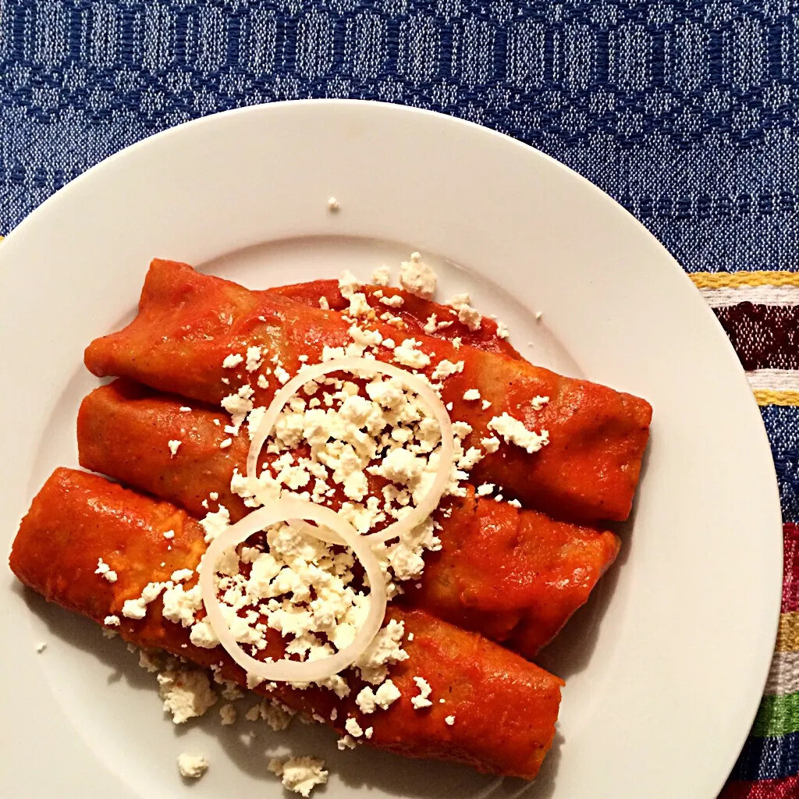

Recetas:
Esta vez te presento una receta de Enchiladas Rojas, una de las más populares en México.

Ingredientes
- 10-12 chiles guajillo secos
- 4 tazas de agua para cocer los chiles
- 1 cucharadita de sal
- 2 ¼ tazas de harina de masa blanca
- 1 taza de agua tibia, para ablandar los chiles
- 1 taza de puré de chile, reservar después de licuar
- 1 ½ tazas de queso fresco desmenuzado
- ½ cebolla blanca mediana, picada fina
- 2 tomates Roma, cortados en medias lunas
- 4 tazas de lechuga iceberg picada fina
- 1 aguacate mediano, cortado en gajos finos
- 12 tortillas de maíz recién hechas con infusión de chile rojo
- 1 patata russet mediana, pelada y cortada en cubos o trozos de ¾ de pulgada
- Aceite para freír
- 1 taza de crema mexicana
- Sal y pimienta al gusto
Direcciones
- Coloca los chiles secos en una cacerola y cúbrelos con agua.
- Lleva el agua a ebullición, luego reduce el fuego a bajo y cocina los chiles a fuego lento durante 10 minutos.
- Una vez ablandados, utiliza unas pinzas o una espumadera para transferir los chiles a una batidora.
- Añade 1 taza del agua de cocción y una pizca de sal. Licúa la mezcla a velocidad alta hasta que esté suave.
- Cuela la salsa a través de un colador de malla de alambre y reserva.
- En un tazón, combina la masa harina con 1 taza de la salsa de chile preparada y 1 taza de agua tibia.
- Mezcla bien hasta que se forme una masa. Si la masa está demasiado pegajosa, agrega un poco más de harina de maíz; si está demasiado seca, incorpora un poco más de líquido.
- Cubre el tazón con papel plástico y déjalo reposar 15 minutos mientras precalientas el comal.
- Calienta un comal o una sartén pesada a fuego medio.
- Forma entre 15 y 20 bolas del tamaño de una pelota de golf con la masa y cúbrelas con una toalla húmeda.
- Forra tu prensa para tortillas con forros.
- Prensa cada bola de masa en una tortilla de aproximadamente 5-6 pulgadas de diámetro.
- Retira con cuidado la tortilla de la prensa, quita el plástico y colócala sobre el comal caliente.
- Cocina la tortilla durante unos 25-30 segundos y dale la vuelta. Debe inflarse ligeramente; presiónala suavemente para que se infle más.
- Vuelve a darle la vuelta rápidamente una vez más y pásala a un calentador de tortillas.
- Mezcla el queso desmenuzado con la cebolla picada.
- En una sartén grande, echa el aceite justo para cubrir el fondo y precaliéntalo a fuego medio.
- Una vez caliente, añade 2-3 tortillas y cocínalas durante 30 segundos por cada lado hasta que estén blandas y flexibles.
- Coloca las tortillas entre trozos de papel de aluminio hasta que todas estén cocidas.
- Deja que las tortillas se hagan al vapor durante unos 5 minutos.
- En una sartén aparte, fríe las patatas en ⅓ taza de aceite precalentado hasta que estén doradas y crujientes. Sazona con sal y pimienta.
- Rellena cada tortilla con unas 3 cucharadas de queso fresco y la mezcla de cebolla por el centro.
- Enrolla bien y coloca en platos para servir, con la costura hacia abajo.